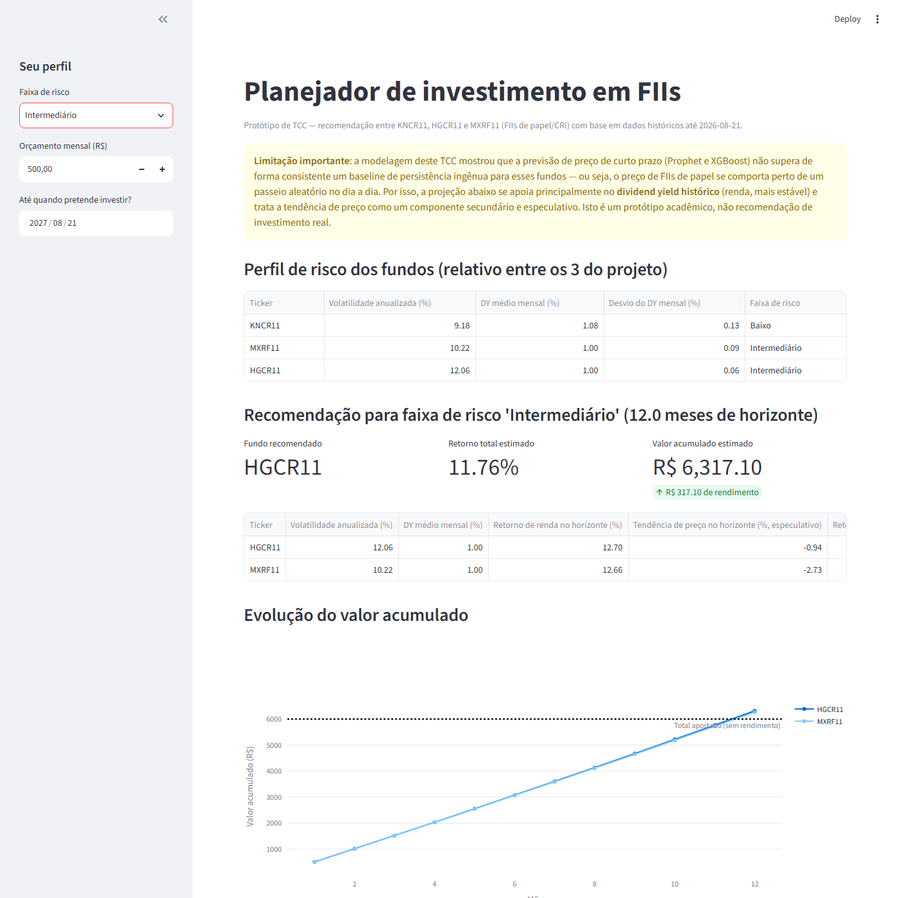

Previsão de preços de FIIs brasileiros
Protótipo: modelagem preditiva (Prophet + XGBoost) e app de planejamento de investimento para KNCR11, HGCR11 e MXRF11.
1Objetivo
Investigar se é possível prever, com dados públicos e gratuitos, o preço de curto prazo de um grupo pequeno de Fundos de Investimento Imobiliário (FIIs) brasileiros do segmento papel/recebíveis (CRI) — KNCR11, HGCR11 e MXRF11 — comparando um baseline de série temporal (Prophet) com um modelo de aprendizado de máquina (XGBoost) usando features engenheiradas. A partir dessa análise, o protótipo evoluiu para um app de planejamento de investimento que recomenda alocação entre os fundos conforme o perfil de risco, orçamento mensal e horizonte de investimento do usuário.
2Metodologia
Fontes de dados (gratuitas, oficiais, sem token)
- Cotações diárias — B3 COTAHIST (série histórica oficial de negociação).
- Indicadores mensais (dividend yield, valor patrimonial da cota, patrimônio líquido) — Informe Mensal da CVM, dados abertos.
Pipeline
coleta_dados.py— baixa e faz o parsing do COTAHIST e do Informe Mensal CVM.eda.py— junta cotação diária com indicadores mensais, cria as features (lags, médias móveis defasadas, retorno diário, P/VP, DY%) e os alvos de previsão.modelagem.py— treina e compara, por fundo, quatro abordagens de previsão.recomendacao.py+app_streamlit.py— lógica de recomendação e interface do app de planejamento.
3Status atual
- Concluído Coleta de dados (cotações B3 + indicadores CVM), 2024–2026, ~96% de cobertura dos dias úteis por fundo.
- Concluído EDA e engenharia de features, com correção de vazamento de dados (data leakage) nas médias móveis e confirmação da unidade do dividend yield no dicionário oficial da CVM.
- Concluído Modelagem: baseline de persistência ingênua, Prophet, XGBoost (preço) e XGBoost (retorno), com métricas de erro de preço, erro de retorno e acurácia direcional.
- Concluído Protótipo do app de planejamento (Streamlit) com perfil de risco, orçamento mensal e horizonte de investimento — testado ponta a ponta no navegador.
- Em andamento Configuração do repositório Git/GitHub para versionar o progresso (3 sessões de trabalho por semana até 16/10).
- A fazer Redação do texto do TCC (introdução, referencial teórico, metodologia, resultados, conclusão).
- A fazer Revisão de hiperparâmetros do XGBoost e validação cruzada temporal (walk-forward), se o tempo permitir.
4Resultados da modelagem
Erro medido no conjunto de teste (últimos 20% dos dias de cada fundo, split temporal, sem embaralhar). MAE e RMSE em R$; MAE de retorno em pontos percentuais; acurácia direcional = % de vezes que o modelo acertou se o fundo subiria ou cairia.
| Fundo | Modelo | RMSE (R$) | MAE (R$) | MAPE | MAE retorno (p.p.) | Acurácia direcional |
|---|---|---|---|---|---|---|
| HGCR11 | Persistência (ingênuo) | 0,808 | 0,603 | 0,64% | 0,636 | 2,3% |
| HGCR11 | Prophet | 16,312 | 14,968 | 15,99% | 15,977 | 48,4% |
| HGCR11 | XGBoost (preço) | 0,811 | 0,637 | 0,67% | 0,672 | 52,3% |
| HGCR11 | XGBoost (retorno) | 0,775 | 0,615 | 0,65% | 0,648 | 52,3% |
| KNCR11 | Persistência (ingênuo) | 0,572 | 0,427 | 0,40% | 0,402 | 1,6% |
| KNCR11 | Prophet | 4,160 | 3,771 | 3,54% | 3,543 | 57,8% |
| KNCR11 | XGBoost (preço) | 0,772 | 0,620 | 0,58% | 0,581 | 53,1% |
| KNCR11 | XGBoost (retorno) | 0,593 | 0,481 | 0,45% | 0,452 | 53,9% |
| MXRF11 | Persistência (ingênuo) | 0,063 | 0,045 | 0,47% | 0,466 | 10,2% |
| MXRF11 | Prophet | 0,490 | 0,368 | 3,84% | 3,833 | 38,3% |
| MXRF11 | XGBoost (preço) | 0,106 | 0,088 | 0,90% | 0,903 | 46,1% |
| MXRF11 | XGBoost (retorno) | 0,068 | 0,049 | 0,50% | 0,500 | 51,6% |
Gráficos gerados


5Protótipo: app de planejamento de investimento
Interface em Streamlit onde o usuário escolhe uma faixa de risco (Baixo/Intermediário — classificada pela volatilidade anualizada relativa entre os 3 fundos), um orçamento mensal e uma data-horizonte de investimento. O app projeta o retorno acumulado esperado (dividend yield histórico composto + tendência de preço, esta última tratada como especulativa dado o achado da seção anterior) e simula o valor acumulado aportando o orçamento mês a mês.


Para rodar localmente: .\venv\Scripts\python.exe -m streamlit run app_streamlit.py
6Limitações conhecidas
7Cronograma
- Até 05/10 EDA e pré-processamento — concluído, adiantado.
- 24/08 Modelagem (Prophet, XGBoost preço/retorno) e protótipo do app — concluído nesta rodada.
- Até 14/10 Redigir o texto do TCC e refinar o protótipo (3 sessões de trabalho por semana).
- 16/10 Checkpoint.
- 19/10 AO1.
- Até 31/10 Correções.
- 02/11 AO2.